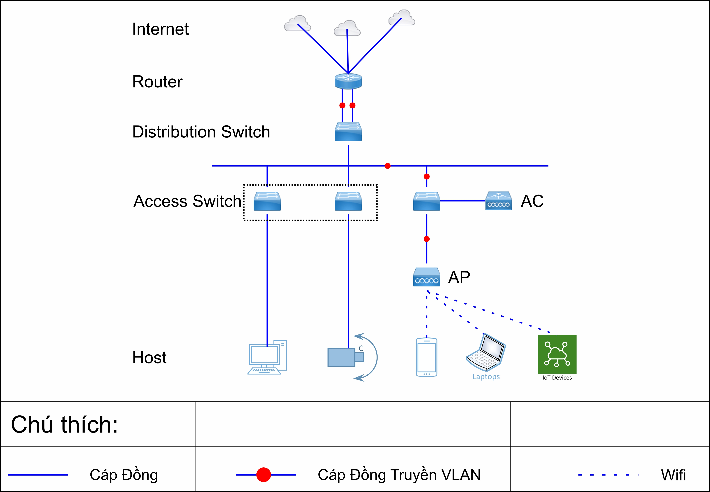

Mạng là gì?
Mạng là môi trường trong đó thông tin được cung cấp, truyền đưa, thu
thập, xử lý, lưu trữ và trao đổi thông qua mạng viễn thông và mạng máy
tính.
Trong đó có những mô hình:
-
Mạng LAN
Mạng cục bộ là một cái tên khác người ta dùng để nói về mạng LAN (Local Area Network – mạng máy tính cục bộ).Mạng LAN là một hệ thống mạng bao gồm các máy tính được kết nối với nhau trong một phạm vi nhỏ nhất định (nhà ở, trường học, tòa nhà…).
Dưới đây là một mô hình mạng LAN đơn giản:

-
Mạng MAN
Mạng MAN (Metropolitan Area Network) là mạng dữ liệu băng rộng được thiết kế cho phạm vi trong thành phố, các thị xã, khoảng cách của chúng thường tối đa là 100km. Đây là mạng mở rộng của LAN.
-
Mạng WAN
Mạng MAN (Metropolitan Area Network) là mạng dữ liệu băng rộng được thiết kế cho phạm vi trong thành phố, các thị xã, khoảng cách của chúng thường tối đa là 100km.
Mạng Internet chính là một trường hợp của mạng WAN phục vụ các dịch vụ Mail, Web,… cho toàn cầu.
Trong trường hợp của chúng ta, mô hình triển khai chính là LAN. Phương thức kết nối chủ yếu là cáp xoắn đôi, cáp quang và sóng vô tuyến.